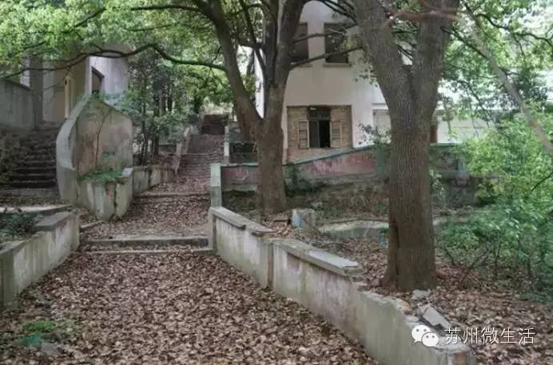
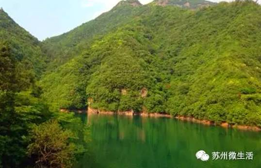

江浙沪藏得最深的绝美山谷，美得不像人间
小时候有个愿望，是住在山谷中。春天，奔跑在漫山遍野鲜花中；夏天，赤脚踩在清泉石上；秋天，坐在树上，变成一片叶子；冬天，皑皑白雪，静静听山谷的声音，潺潺小溪，碧波荡漾，不像人间。
其实，这些山谷就藏在苏州附近，趁着春光，我们一起去！
浙北大峡谷
有浙江“青藏高原”之称，奇峰怪石林立，青松苍劲挺拔，云雾变幻无穷，碧潭飞瀑密布，竹海浩瀚无边，行走在山谷间，“闲看亭前花开花落，漫随天外云卷云舒”。
浙北大峡谷在中国竹乡安吉南部，由大汉岭马尖岗，董岭天堂街，石岭九条弯，龙须山，高山农家度假五大景区组成。沿山路而上，一路碧空悠悠、白云散散，伴着小溪泉流行走山水间。
在林中穿行，溯流而上，不知不觉，一汪清泉撞进了眼睛，“行到水穷处，坐看云起时”。这里无峰不奇，无石不峭，无寺不古的感觉。石岭，红林寺、独山寺等都建于隋唐年间，是江南“佛学一叶”。
走在吊桥上，足下是怪石清泉，两岸绿树险峰，抬头，是一片湛蓝的天，晃悠悠，晃悠悠，一不小心，晃到了天宫。《卧虎藏龙》中那片一览无垠的大竹海，就在这里。
龙王村地处浙北地区，位于上墅乡南部，东接江南天池，步行半小时可达风景区，南连大汉七十二峰，是天目山脉东北部一个典型的山村，距离杭州80公里，距离上海230公里。
太湖源
瀑布飞流直下，峭壁绿树成荫，太湖源素来有“江南小九寨”之称。龙须壁高耸千仞，是太湖源的经典；云碧潭像是九寨沟大大小小的海子，倒映着两边高山的绿色；醉花瀑又给人另一番感觉，是完全不同于云碧潭的壮观震撼。
因为原始生态环境保护的很好，所以这里简直是野生动物的天堂，猴子什么的，是这里的居民之一，打个招呼吧！
天气暖和了，光脚走进山间的小溪，两岸绿树成荫，林中鸟儿鸣叫，阳光正好！

浙南莒溪大峡谷
如果你要来这里，最好穿一双结实点的鞋，因为大峡谷中几乎没有好路可走。踩石头、跨溪水，没路找路，就是莒溪大峡谷最大的乐趣。
两岸连山，重岩叠嶂，只有亲眼领略过才知道它不负“浙南九寨沟”的称号。瀑布连着瀑布是峡谷的一大特色，其中以三折瀑最为壮观。
高不可攀的通天洞经常笼罩在云雾中，平时难得看到它的真面目。但是由于山势险峻，山高路远，吸引了很多探险者，有征服大自然的满足感。
游鱼钻隙，清澈见底；老藤缠绕，覆盖坡岸；两岸连山，重岩叠嶂。密林中，常有兔伏鸟鸣，珍稀动物出没穿梭，一不小心，小松鼠擦肩而过~
形态逼真的猴峰，情意绵绵的夫妻峰，促膝谈心的石笋，看谁先找到。
浙东白岩溪
白岩溪在浙江余姚，一条延绵4.5公里的溪水，集各种美貌于一身。溪流上段，高低不平的地面形成了大大小小的瀑布，真的是“清泉石上流”。
沿着溪水走，中下段又是另一番景象。大大小小的水潭星罗棋布，水下的鹅卵石清晰可见，尽情光脚去撒欢吧，不知道会不会有走指压板的快感，哈哈。
这里连芝林独有的水产品，如南风蛤、黑珍珠蛳螺等都有很多美好的传说。进入峡谷长溪，犹如进入人间仙境，不仅能领略到山水自然美景，更有一种人在画中游得无限情趣。
临安大明山
这是一座特别有性格的山，虽然它秀丽河山，有明艳树木，但是它更爱极限运动。山下，岩石峭壁、溪水瀑布；登上山顶，奇松、怪石、云海。一个大明山，两种风景，两处闲情。
想体验溯溪、桥降、攀岩、洞穴探奇、山顶野营、野外生存？来！光是走走悬空栈道就很刺激，浮在云中，贴在山体绝壁之上，底下没有任何支撑，下面就是万丈深渊。
春天是来这里自驾最好的季节，山间的空气是我们想象不到的新鲜，山间小路两侧是层层叠叠的绿树。秋天，溪水倒映的是山上的黄色和红色，眼前的美景，让人完全感觉不到秋天的萧瑟。

听说，在这里许愿特别灵，夜晚来临，能看到漫天的繁星，好像伸手就能够到。
遂昌千佛山
瀑、池、湖、潭、涧，峡谷清幽、原始森林，要啥有啥，就是这么任性！走在山间，每一步都是深呼吸的有氧漫步。从下往上，与溪水瀑布迎面相撞。
整座山除了偶尔出现的亭子、小桥和十八罗汉，其他都是未经人工雕琢的原始状态。伴着鸟声、水声和风声，不知不觉就融入了山水之间。
苏州大峡谷——元山宕口
你以为苏州只有小桥流水，你以为苏州只有粉墙黛瓦，你以为苏州只有园林？no，苏州还有粗狂的山谷，它就在西山岛上。
山谷原本是一个大型的采石坑，2000年以后，采石场关闭。凤凰涅槃后，它呈现出了更加壮丽的美。
生命力旺盛的植被，上天赐予的雨水，苏州的灵气，都铸就了它的美。
这种美不光在表面，站在无机坑旁边，闭上眼睛，仿佛能听到那个泛着黄的时代，采石工人一锤一锤凿石的呯嗙声，炸药炸开石头的轰鸣声。那是一个时代赋予自然的深刻烙印。
山谷有两个宕口相连，由于还未开发，四周都是荒草，如果想去，注意安全。
西山天王坞
在苏州，可能很多人都去过西山岛，为了回归自然。但是你很可能没去过藏在其中的天王坞，还没开发的自然风光，山谷佳境，乡间野趣很多人都不知道。这里的美，十分有九分是在自然，自然的山、自然的水、自然的花草树木。
站在西山山顶，云雾缭绕，仿佛仙境一般，纵览西山太湖的美丽景色，俯瞰太湖水湾的大气磅礴。
漫步在这曲尽通幽的小道上，感受着树林里鸟语花香的清新气息，阳光被树上的叶子隔出一块块阴影，慢慢地走着，慢慢地去享受大自然带给我们的美妙与神奇。
天王坞水库被大家称之为“西山的九寨沟”。越来越多的人前往探幽，也许知名度还不高，但就是因为知名度不高，所以更值得一去。
水库的旁边还有一块梅园，每年的春天梅花开放，香飘满坞。天王坞内清静优雅，等到落英缤纷，带上家人、朋友于此赏花、野餐，想想都美！
富春江小三峡
很多叫小三峡的，很多叫小九寨的，不知道名实是否符合。能确定的是富春江小三峡这个名号，名副其实。“天下佳山水，古今推富春”，是古已有之的证明，“不是漓江，胜似漓江”是今人对富春江的评价。
富春江小三峡，分为龙门峡、子陵峡和子胥峡，是富春江上游桐庐七里泷，至建德梅城一段河道，全长24公里，是富春江上风光最美的一段。
河道两岸是高耸的山，山上树木郁郁葱葱，感觉眼睛都被洗净了，是在城市中从没有过的轻松、舒适。行船其间，你都不知道自己是在长江三峡、桂林漓江还是哪里。
靠岸，阳光洒在幽静的山谷里，踏着小溪，九曲回环，转个弯，别有洞天，跟着鸟鸣，一处比一处美。
林间有很多木屋民宿，今后的每个日日夜夜，都会回想起山谷中那一晚，月明星稀，乌鹊南飞。林间点点萤火虫和天上的星辉，连成一片。
南方的春天很短暂，美好的时光一定不要辜负！所以，这些江浙沪最美山谷，趁着春光一起去吧？